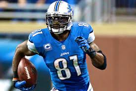
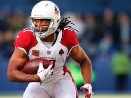

.png)

Calvin Johnson, apodado "Megatron", es un exreceptor abierto de la NFL que jugó toda su carrera con los Detroit Lions (2007-2015). Destacado por su combinación única de tamaño, velocidad y habilidad para atrapar pases, fue uno de los receptores más dominantes de su época. Johnson fue seis veces Pro Bowler y estableció el récord de más yardas recibidas en una temporada (1,964 en 2012). A pesar de retirarse temprano, fue incluido en el Salón de la Fama del Fútbol Americano Profesional en 2021.
Larry Fitzgerald es un exreceptor abierto de la NFL que jugó 17 temporadas con los Arizona Cardinals (2004-2020). Conocido por sus manos seguras, ética de trabajo y longevidad, es uno de los mejores receptores en la historia de la liga. Fue 11 veces Pro Bowler y ocupa el segundo lugar en recepciones y yardas recibidas de todos los tiempos. Destacó especialmente en los playoffs de 2008, llevando a los Cardinals al Super Bowl XLIII. Su legado va más allá del campo, siendo reconocido por su labor filantrópica y liderazgo.
Jerry Rice es considerado el mejor receptor en la historia de la NFL. Jugó principalmente con los San Francisco 49ers, ganando tres Super Bowls y estableciendo récords de recepciones, yardas y touchdowns. Su ética de trabajo y durabilidad lo convirtieron en una leyenda del deporte.